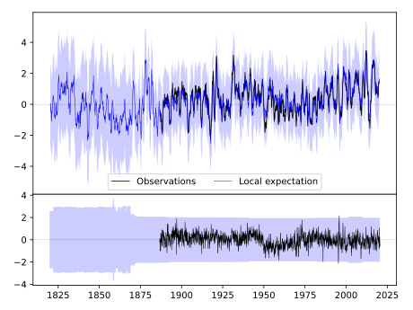
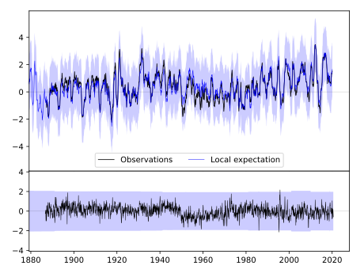
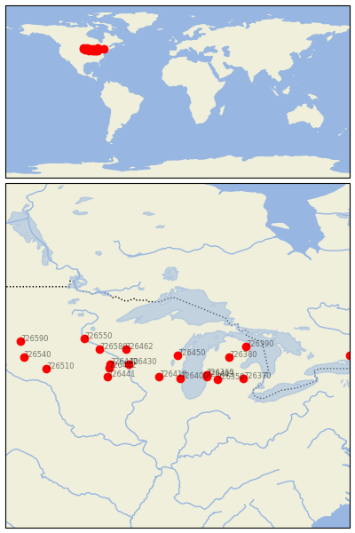

GREEN BAY, WISCONSIN [USA]


| Neighbour | Name | Country | Distance | Lon/Lat | Years |
|---|
| 726450 | GREEN BAY, WISCONSIN | USA | 0 | -88.1, 44.5 | 1886-2020 |
| 726400 | MILWAUKEE/G.MITCHELL | USA | 167 | -87.9, 43.0 | 1941-2020 |
| 726410 | MADISON, WISCONSIN | USA | 183 | -89.3, 43.1 | 1869-2020 |
| 726360 | MUSKEGON/COUNTY | USA | 210 | -86.2, 43.2 | 1940-2020 |
| 726443 | GRAND HAVEN | USA | 217 | -86.2, 43.1 | 1871-1980 |
| 726430 | LA CROSSE/MUNICIPAL | USA | 263 | -91.3, 43.9 | 1873-2020 |
| 726380 | HOUGHTON-LAKE------- | USA--------- | 270 | -84.7, 44.4 | 1931-2020 |
| 726462 | EAU CLAIRE | USA | 272 | -91.5, 44.9 | 1891-1980 |
| 726350 | GRAND RAPIDS | USA | 274 | -85.5, 42.9 | 1887-2020 |
| 726440 | ROCHESTER/MUNICIPAL | USA | 356 | -92.5, 43.9 | 1932-2020 |
| 726390 | ALPENA, MICHIGAN | USA | 361 | -83.6, 45.1 | 1873-2020 |
| 726442 | GRAND MEADOW | USA | 370 | -92.6, 43.7 | 1893-2019 |
| 726370 | FLINT/BISHOP | USA | 383 | -83.8, 43.0 | 1941-2020 |
| 726441 | CHARLES CITY | USA | 400 | -92.7, 43.1 | 1891-2019 |
| 726580 | MINNEAPOLIS/ST PAUL | USA | 405 | -93.2, 44.9 | 1819-2020 |
| 726550 | ST.CLOUD | USA | 494 | -94.2, 45.6 | 1893-2020 |
| 726510 | SIOUX FALLS/FOSS FLD | USA | 694 | -96.7, 43.6 | 1938-2020 |
| 726540 | HURON, SOUTH DAKOTA | USA | 801 | -98.2, 44.4 | 1881-2020 |
| 726590 | ABERDEEN RGNL AP | USA | 816 | -98.4, 45.4 | 1890-2020 |
| 726175 | ITHACA | USA | 895 | -76.8, 44.5 | 1827-1990 |